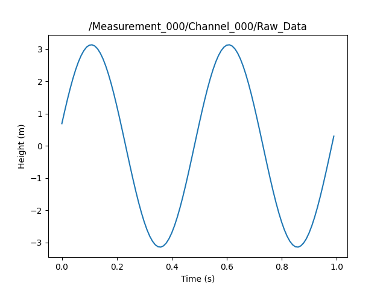

Note
Click here to download the full example code
01. pyUSID in 10 minutes¶
Suhas Somnath
Rajiv Giridharagopal (University of Washington)
4/24/2020
This document serves as a quick primer to the essential components of pyUSID
Recommended pre-requisite reading¶
import pyUSID as usid
import numpy as np
import h5py
Converting a 3D Matrix to USID¶
As an example of how to use pyUSID to reformat data for analysis, let’s take an image with some time-series at each pixel Let’s imagine we have a 10 x 10 array that measures the height. But we’re applying a voltage to oscillate the height at 2 Hz for 1 second, with 10 Hz sampling and a slight phase shift and amplitude shift at each pixel.
In other words, a 10 x 10 x 100 array
# Create some data
data = np.zeros((10,10,100))
phase = np.reshape(np.linspace(-np.pi, np.pi, 100), [10,10])
amp = np.reshape(np.linspace(1, 5, 100), [10,10])
for x in np.arange(0,100):
for r in np.arange(data.shape[0]):
for c in np.arange(data.shape[1]):
data[r,c,x] = amp[r][c] * np.sin(2*np.pi * 2*x/100 + phase[r][c])
# To visualize a 3D stack, there's a handy built-in function
usid.plot_utils.plot_map_stack(data, num_comps=4, fig_mult=(2,10), pad_mult=(0.01,.4))
Out:
/home/travis/virtualenv/python3.7.1/lib/python3.7/site-packages/sidpy/viz/plot_utils/image.py:378: MatplotlibDeprecationWarning:
The 'add_all' parameter of __init__() was deprecated in Matplotlib 3.3 and will be removed two minor releases later. If any parameter follows 'add_all', they should be passed as keyword, not positionally.
**igkwargs)
(<Figure size 2000x400 with 8 Axes>, <mpl_toolkits.axes_grid1.axes_grid.ImageGrid object at 0x7f0388f303c8>)
Instead of being 3D, we need it to be (10x10, 100) in 2D for USID. First, let’s define the position dimensions, which are 10 x 10 nm
pos = usid.hdf_utils.build_ind_val_matrices([np.arange(0,10e-9, 1e-9), np.arange(0,10e-9, 1e-9)],
is_spectral=False)
# pos[0] are the indices (0,1,2...), pos[1] are the values (0,1e-9, 2e-9...)
# Second, let's define he spectral dimensions, which is our 1 s long waveform
spec = usid.hdf_utils.build_ind_val_matrices([np.arange(0,1,0.01)], is_spectral=True)
# Finally, we make our USID-compatible dataset, which is now (100, 100)
data_reshape, _ = usid.hdf_utils.reshape_from_n_dims(data, pos[0], spec[0])
Creating a USID Dataset¶
Now that we have a USID-compatible dataset, we’re almost there Let’s actually create the USID dataset
# Use the USID Dimension to define the dimensions directly, including the units
pos_dims = [usid.write_utils.Dimension('Rows', 'm', np.arange(0,10e-9, 1e-9)),
usid.write_utils.Dimension('Cols', 'm', np.arange(0,10e-9, 1e-9))]
spec_dims = [usid.write_utils.Dimension('Time', 's', np.arange(0,1,0.01))]
# Use the ArrayTranslator to create our file
# Let's define our HDF55 file. This is the name of a file we'll write into
h5_path = 'cookbook_data.h5'
# Now let's use the ArrayTranslator to write our data to an HDF5 file
tran = usid.io.numpy_translator.ArrayTranslator()
tran.translate(h5_path, 'data', data_reshape, 'Height', 'm',
pos_dims, spec_dims)
Out:
/home/travis/virtualenv/python3.7.1/lib/python3.7/site-packages/pyUSID/io/dtype_utils.py:65: FutureWarning: pyUSID.io.dtype_utils.contains_integers has been moved to sidpy.base.num_utils.contains_integers. This copy in pyUSID willbe removed in future release. Please update your import statements
FutureWarning)
/home/travis/virtualenv/python3.7.1/lib/python3.7/site-packages/pyUSID/io/dtype_utils.py:312: FutureWarning: pyUSID.io.dtype_utils.validate_single_string_arg has been moved to sidpy.base.string_utils.validate_single_string_arg. This copy in pyUSID willbe removed in future release. Please update your import statements
FutureWarning)
/home/travis/virtualenv/python3.7.1/lib/python3.7/site-packages/pyUSID/io/dtype_utils.py:361: FutureWarning: pyUSID.io.dtype_utils.validate_string_args has been moved to sidpy.base.string_utils.validate_string_args. This copy in pyUSID willbe removed in future release. Please update your import statements
FutureWarning)
/home/travis/virtualenv/python3.7.1/lib/python3.7/site-packages/pyUSID/io/dtype_utils.py:65: FutureWarning: pyUSID.io.dtype_utils.contains_integers has been moved to sidpy.base.num_utils.contains_integers. This copy in pyUSID willbe removed in future release. Please update your import statements
FutureWarning)
/home/travis/virtualenv/python3.7.1/lib/python3.7/site-packages/pyUSID/io/hdf_utils/simple.py:1135: UserWarning: In the future write_ind_val_dsets will default to requiring dimensions to be arranged from slowest to fastest varying
warn('In the future write_ind_val_dsets will default to requiring dimensions to be arranged from slowest to fastest varying')
/home/travis/virtualenv/python3.7.1/lib/python3.7/site-packages/pyUSID/io/hdf_utils/simple.py:1192: UserWarning: pyUSID.io.hdf_utils.simple.write_ind_val_dsets no longer createsregion references for each dimension. Please use pyUSID.io.reg_ref.write_region_references to manually create region references
warn('pyUSID.io.hdf_utils.simple.write_ind_val_dsets no longer creates'
/home/travis/virtualenv/python3.7.1/lib/python3.7/site-packages/pyUSID/io/dtype_utils.py:41: FutureWarning: pyUSID.io.dtype_utils.lazy_load_array has been moved to sidpy.hdf.hdf_utils.lazy_load_array. This copy in pyUSID willbe removed in future release. Please update your import statements
FutureWarning)
'cookbook_data.h5'
That’s it! We’re done. It’s just a few lines of code to convert a random matrix of data into a USID format. We just need to know a little about our data. Now that our cookbook_data is full of delicious data, let’s crack it open.
We can open the file by using the h5py command
h5_file = h5py.File(h5_path)
Out:
/home/travis/build/pycroscopy/pyUSID/examples/beginner/plot_ten_mins_pyusid.py:92: H5pyDeprecationWarning: The default file mode will change to 'r' (read-only) in h5py 3.0. To suppress this warning, pass the mode you need to h5py.File(), or set the global default h5.get_config().default_file_mode, or set the environment variable H5PY_DEFAULT_READONLY=1. Available modes are: 'r', 'r+', 'w', 'w-'/'x', 'a'. See the docs for details.
h5_file = h5py.File(h5_path)
Print_tree shows all the contents in this HDF5 file
usid.hdf_utils.print_tree(h5_file, rel_paths=True)
Out:
/
Measurement_000
Measurement_000/Channel_000
Measurement_000/Channel_000/Position_Indices
Measurement_000/Channel_000/Position_Values
Measurement_000/Channel_000/Raw_Data
Measurement_000/Channel_000/Spectroscopic_Indices
Measurement_000/Channel_000/Spectroscopic_Values
Our data are in the ‘Raw_Data’ dataset. How do we extract our data? First let’s print all the Main datasets
print(usid.hdf_utils.get_all_main(h5_file))
Out:
[<HDF5 dataset "Raw_Data": shape (100, 100), type "<f8">
located at:
/Measurement_000/Channel_000/Raw_Data
Data contains:
Height (m)
Data dimensions and original shape:
Position Dimensions:
Cols - size: 10
Rows - size: 10
Spectroscopic Dimensions:
Time - size: 100
Data Type:
float64]
This is a list of all the Main datasets. In this case there’s only a single one. So we can access our data in two ways:
# Option 1:
# Access a specific dataset in the list of Main datasets
data_usid = usid.hdf_utils.get_all_main(h5_file)[0]
# Option 2:
# We could highlight the path in the tree and access it directly
data_usid = h5_file['Measurement_000/Channel_000/Raw_Data']
Lastly, let’s upgrade from h5py Dataset to a USID Dataset
data_usid = usid.USIDataset(data_usid)
print(data_usid)
Out:
<HDF5 dataset "Raw_Data": shape (100, 100), type "<f8">
located at:
/Measurement_000/Channel_000/Raw_Data
Data contains:
Height (m)
Data dimensions and original shape:
Position Dimensions:
Cols - size: 10
Rows - size: 10
Spectroscopic Dimensions:
Time - size: 100
Data Type:
float64
Exploring a USID Dataset¶
There are lots of advantages to this kind of dataset
# Let's take a look via the handy visualize option
# What is the signal vs time at pixel (5,3)
_, _ = data_usid.visualize(slice_dict={'Rows': 5, 'Cols': 3})
# What about the image at 0.3 seconds?
_, _ = data_usid.visualize(slice_dict={'Time': 30})
- 
Out:
/home/travis/virtualenv/python3.7.1/lib/python3.7/site-packages/pyUSID/io/dtype_utils.py:337: FutureWarning: pyUSID.io.dtype_utils.validate_list_of_strings has been moved to sidpy.base.string_utils.validate_list_of_strings. This copy in pyUSID willbe removed in future release. Please update your import statements
FutureWarning)
/home/travis/virtualenv/python3.7.1/lib/python3.7/site-packages/pyUSID/io/dtype_utils.py:337: FutureWarning: pyUSID.io.dtype_utils.validate_list_of_strings has been moved to sidpy.base.string_utils.validate_list_of_strings. This copy in pyUSID willbe removed in future release. Please update your import statements
FutureWarning)
To access our data directly, we use the [()] shortcut
data_usid[()]
Out:
array([[-1.22464680e-16, -1.25333234e-01, -2.48689887e-01, ...,
3.68124553e-01, 2.48689887e-01, 1.25333234e-01],
[-8.32466688e-01, -9.67608202e-01, -1.08748996e+00, ...,
-3.57794561e-01, -5.25136477e-01, -6.84196678e-01],
[-1.72654042e+00, -1.78021203e+00, -1.80580864e+00, ...,
-1.40766679e+00, -1.53878731e+00, -1.64564023e+00],
...,
[ 4.00287303e+00, 3.81531114e+00, 3.56757951e+00, ...,
4.17996942e+00, 4.18665132e+00, 4.12730722e+00],
[ 2.72498089e+00, 2.23963661e+00, 1.71897192e+00, ...,
3.89604828e+00, 3.55976928e+00, 3.16735059e+00],
[ 6.12323400e-16, -6.26666168e-01, -1.24344944e+00, ...,
1.84062276e+00, 1.24344944e+00, 6.26666168e-01]])
Reconstruct the original form of (10,10,100)
data_usid.get_n_dim_form()
Out:
array([[[-1.22464680e-16, -1.25333234e-01, -2.48689887e-01, ...,
3.68124553e-01, 2.48689887e-01, 1.25333234e-01],
[-8.32466688e-01, -9.67608202e-01, -1.08748996e+00, ...,
-3.57794561e-01, -5.25136477e-01, -6.84196678e-01],
[-1.72654042e+00, -1.78021203e+00, -1.80580864e+00, ...,
-1.40766679e+00, -1.53878731e+00, -1.64564023e+00],
...,
[ 3.68986038e+00, 3.78862182e+00, 3.82763442e+00, ...,
3.05520790e+00, 3.32023885e+00, 3.53290765e+00],
[ 3.95361569e+00, 3.73312968e+00, 3.45376999e+00, ...,
4.23201552e+00, 4.20504118e+00, 4.11175082e+00],
[ 2.50660743e+00, 1.99799769e+00, 1.45787833e+00, ...,
3.76640193e+00, 3.39783716e+00, 2.97568647e+00]],
[[-6.59865023e-02, -1.95600850e-01, -3.22130455e-01, ...,
3.20874474e-01, 1.94303625e-01, 6.46684919e-02],
[-9.28470992e-01, -1.05983203e+00, -1.17447888e+00, ...,
-4.55937498e-01, -6.24123859e-01, -7.82467415e-01],
[-1.79637896e+00, -1.83683380e+00, -1.84832067e+00, ...,
-1.50980341e+00, -1.63156415e+00, -1.72759415e+00],
...,
[ 3.78668017e+00, 3.85612671e+00, 3.86475982e+00, ...,
3.22908900e+00, 3.47066948e+00, 3.65751543e+00],
[ 3.88660943e+00, 3.63350150e+00, 3.32309108e+00, ...,
4.26708260e+00, 4.20591782e+00, 4.07842321e+00],
[ 2.27382918e+00, 1.74368869e+00, 1.18604918e+00, ...,
3.61860084e+00, 3.21873613e+00, 2.76811003e+00]],
[[-1.36822147e-01, -2.70114624e-01, -3.99147233e-01, ...,
2.67457022e-01, 1.34099978e-01, -1.37190215e-03],
[-1.02466277e+00, -1.15127053e+00, -1.25972206e+00, ...,
-5.57107682e-01, -7.25220155e-01, -8.81895474e-01],
[-1.86019242e+00, -1.88663381e+00, -1.88332187e+00, ...,
-1.60881754e+00, -1.72018025e+00, -1.80441468e+00],
...,
[ 3.86930200e+00, 3.90851699e+00, 3.88609233e+00, ...,
3.39279036e+00, 3.60938920e+00, 3.76906581e+00],
[ 3.80182410e+00, 3.51654590e+00, 3.17580967e+00, ...,
4.28470428e+00, 4.18895594e+00, 4.02714527e+00],
[ 2.02741640e+00, 1.47760285e+00, 9.04486617e-01, ...,
3.45298211e+00, 3.02295616e+00, 2.54525639e+00]],
...,
[[-5.51353069e-01, -6.92178932e-01, -8.22088720e-01, ...,
-8.62365598e-02, -2.45973877e-01, -4.01832038e-01],
[-1.48689608e+00, -1.57501934e+00, -1.63830361e+00, ...,
-1.08921117e+00, -1.24206139e+00, -1.37532357e+00],
[-2.06962665e+00, -2.01601194e+00, -1.93060352e+00, ...,
-2.03383206e+00, -2.07860752e+00, -2.09060211e+00],
...,
[ 4.04865410e+00, 3.92725549e+00, 3.74392172e+00, ...,
4.02714269e+00, 4.09899465e+00, 4.10620301e+00],
[ 3.11581129e+00, 2.68168216e+00, 2.20526129e+00, ...,
4.09995402e+00, 3.83058342e+00, 3.50080223e+00],
[ 6.22732575e-01, 6.24407800e-03, -6.10342891e-01, ...,
2.37530860e+00, 1.81667946e+00, 1.22940021e+00]],
[[-6.43351237e-01, -7.83201758e-01, -9.10700719e-01, ...,
-1.72508318e-01, -3.35577630e-01, -4.93354682e-01],
[-1.57118254e+00, -1.64872428e+00, -1.70026465e+00, ...,
-1.19670632e+00, -1.34337725e+00, -1.46886231e+00],
[-2.08613451e+00, -2.01497586e+00, -1.91203984e+00, ...,
-2.10032781e+00, -2.12914967e+00, -2.12439356e+00],
...,
[ 4.03449045e+00, 3.88000653e+00, 3.66433260e+00, ...,
4.11147876e+00, 4.15114643e+00, 4.12534804e+00],
[ 2.92825467e+00, 2.46778185e+00, 1.96839063e+00, ...,
4.00728794e+00, 3.70412569e+00, 3.34254716e+00],
[ 3.14557016e-01, -3.08274073e-01, -9.26243495e-01, ...,
2.11454094e+00, 1.53559275e+00, 9.32427352e-01]],
[[-7.37237478e-01, -8.75201903e-01, -9.99363870e-01, ...,
-2.63166871e-01, -4.28787744e-01, -5.87646379e-01],
[-1.65127147e+00, -1.71731836e+00, -1.75628211e+00, ...,
-1.30307852e+00, -1.44250537e+00, -1.55918304e+00],
[-2.09319257e+00, -2.00415605e+00, -1.88351280e+00, ...,
-2.15923703e+00, -2.17134934e+00, -2.14921818e+00],
...,
[ 4.00287303e+00, 3.81531114e+00, 3.56757951e+00, ...,
4.17996942e+00, 4.18665132e+00, 4.12730722e+00],
[ 2.72498089e+00, 2.23963661e+00, 1.71897192e+00, ...,
3.89604828e+00, 3.55976928e+00, 3.16735059e+00],
[ 6.12323400e-16, -6.26666168e-01, -1.24344944e+00, ...,
1.84062276e+00, 1.24344944e+00, 6.26666168e-01]]])
What are the properties of our data?
print('Rows=',data_usid.get_pos_values('Rows'))
print('Cols=',data_usid.get_pos_values('Cols'))
print('Times=',data_usid.get_spec_values('Time'))
# Attributes of the data when it was written
print(usid.hdf_utils.get_attributes(data_usid))
# To get the path of the Main dataset within the HDF5 file
print(data_usid.name)
# And to get the parent folder of this Dataset, you use
print(data_usid.parent.name)
Out:
Rows= [0.e+00 1.e-09 2.e-09 3.e-09 4.e-09 5.e-09 6.e-09 7.e-09 8.e-09 9.e-09]
Cols= [0.e+00 1.e-09 2.e-09 3.e-09 4.e-09 5.e-09 6.e-09 7.e-09 8.e-09 9.e-09]
Times= [0. 0.01 0.02 0.03 0.04 0.05 0.06 0.07 0.08 0.09 0.1 0.11 0.12 0.13
0.14 0.15 0.16 0.17 0.18 0.19 0.2 0.21 0.22 0.23 0.24 0.25 0.26 0.27
0.28 0.29 0.3 0.31 0.32 0.33 0.34 0.35 0.36 0.37 0.38 0.39 0.4 0.41
0.42 0.43 0.44 0.45 0.46 0.47 0.48 0.49 0.5 0.51 0.52 0.53 0.54 0.55
0.56 0.57 0.58 0.59 0.6 0.61 0.62 0.63 0.64 0.65 0.66 0.67 0.68 0.69
0.7 0.71 0.72 0.73 0.74 0.75 0.76 0.77 0.78 0.79 0.8 0.81 0.82 0.83
0.84 0.85 0.86 0.87 0.88 0.89 0.9 0.91 0.92 0.93 0.94 0.95 0.96 0.97
0.98 0.99]
/home/travis/virtualenv/python3.7.1/lib/python3.7/site-packages/pyUSID/io/hdf_utils/base.py:133: UserWarning: pyUSID.io.hdf_utils.get_attributes has been moved to sidpy.hdf.hdf_utils.get_attributes. This copy in pyUSID willbe removed in future release. Please update your import statements
warn('pyUSID.io.hdf_utils.get_attributes has been moved to '
{'Position_Indices': <HDF5 object reference>, 'Position_Values': <HDF5 object reference>, 'Spectroscopic_Indices': <HDF5 object reference>, 'Spectroscopic_Values': <HDF5 object reference>, 'machine_id': 'localhost', 'platform': 'Linux-4.15.0-1077-gcp-x86_64-with-debian-stretch-sid', 'pyUSID_version': '0.0.9', 'quantity': 'Height', 'sidpy_version': '0.0.1', 'timestamp': '2020_08_18-02_10_07', 'units': 'm'}
/Measurement_000/Channel_000/Raw_Data
/Measurement_000/Channel_000
Adding some new data¶
Let’s say we process our data using some method and want to save that process. For the sake of argument, we’ll just make a matrix that’s the magnitude^2
data_proc = np.array(data_usid[()]**2)
# Let's create a new group within this file to store our results
result_group = usid.hdf_utils.create_indexed_group(h5_file[data_usid.parent.name], 'Magnitude')
# The "indexed" part means it appends 000, 001, etc if we do this many times
# Many built-in pyUSID and pycroscopy command do this so we don't overwrite old
# results. Because of the power of HDF5 we can go back to old processing and see!
#
# There's an analogous command create_results_group if you'd like
#
# Anyway let's print our tree out for good measure
usid.hdf_utils.print_tree(h5_file, rel_paths=True)
Out:
/home/travis/virtualenv/python3.7.1/lib/python3.7/site-packages/pyUSID/io/dtype_utils.py:312: FutureWarning: pyUSID.io.dtype_utils.validate_single_string_arg has been moved to sidpy.base.string_utils.validate_single_string_arg. This copy in pyUSID willbe removed in future release. Please update your import statements
FutureWarning)
/
Measurement_000
Measurement_000/Channel_000
Measurement_000/Channel_000/Magnitude_000
Measurement_000/Channel_000/Position_Indices
Measurement_000/Channel_000/Position_Values
Measurement_000/Channel_000/Raw_Data
Measurement_000/Channel_000/Spectroscopic_Indices
Measurement_000/Channel_000/Spectroscopic_Values
Now we want to add our data. But we want to add some attributes as well to describe what we’ve done to our data. Attributes are a dictionary, so let’s create one.
attrs = {'Method': 'Magnitude_Squared', 'units': 'm^2'}
usid.hdf_utils.write_simple_attrs(result_group, attrs)
Now, let’s write a new main dataset
data_result = usid.hdf_utils.write_main_dataset(result_group,
data_proc,
'Data Squared',
'Height Squared', 'm^2',
pos_dims,
spec_dims)
Out:
/home/travis/virtualenv/python3.7.1/lib/python3.7/site-packages/pyUSID/io/dtype_utils.py:361: FutureWarning: pyUSID.io.dtype_utils.validate_string_args has been moved to sidpy.base.string_utils.validate_string_args. This copy in pyUSID willbe removed in future release. Please update your import statements
FutureWarning)
/home/travis/virtualenv/python3.7.1/lib/python3.7/site-packages/pyUSID/io/dtype_utils.py:65: FutureWarning: pyUSID.io.dtype_utils.contains_integers has been moved to sidpy.base.num_utils.contains_integers. This copy in pyUSID willbe removed in future release. Please update your import statements
FutureWarning)
/home/travis/virtualenv/python3.7.1/lib/python3.7/site-packages/pyUSID/io/hdf_utils/simple.py:1135: UserWarning: In the future write_ind_val_dsets will default to requiring dimensions to be arranged from slowest to fastest varying
warn('In the future write_ind_val_dsets will default to requiring dimensions to be arranged from slowest to fastest varying')
/home/travis/virtualenv/python3.7.1/lib/python3.7/site-packages/pyUSID/io/hdf_utils/simple.py:1192: UserWarning: pyUSID.io.hdf_utils.simple.write_ind_val_dsets no longer createsregion references for each dimension. Please use pyUSID.io.reg_ref.write_region_references to manually create region references
warn('pyUSID.io.hdf_utils.simple.write_ind_val_dsets no longer creates'
/home/travis/virtualenv/python3.7.1/lib/python3.7/site-packages/pyUSID/io/dtype_utils.py:41: FutureWarning: pyUSID.io.dtype_utils.lazy_load_array has been moved to sidpy.hdf.hdf_utils.lazy_load_array. This copy in pyUSID willbe removed in future release. Please update your import statements
FutureWarning)
This populates our new folder with the new data! Let’s look for the Magnitude folder in our tree:
usid.hdf_utils.print_tree(h5_file, rel_paths=True)
Out:
/
Measurement_000
Measurement_000/Channel_000
Measurement_000/Channel_000/Magnitude_000
Measurement_000/Channel_000/Magnitude_000/Data Squared
Measurement_000/Channel_000/Magnitude_000/Position_Indices
Measurement_000/Channel_000/Magnitude_000/Position_Values
Measurement_000/Channel_000/Magnitude_000/Spectroscopic_Indices
Measurement_000/Channel_000/Magnitude_000/Spectroscopic_Values
Measurement_000/Channel_000/Position_Indices
Measurement_000/Channel_000/Position_Values
Measurement_000/Channel_000/Raw_Data
Measurement_000/Channel_000/Spectroscopic_Indices
Measurement_000/Channel_000/Spectroscopic_Values
If we get all the Main datasets, we see a new dataset pop up in our list.
print(usid.hdf_utils.get_all_main(h5_file))
Out:
[<HDF5 dataset "Data Squared": shape (100, 100), type "<f8">
located at:
/Measurement_000/Channel_000/Magnitude_000/Data Squared
Data contains:
Height Squared (m^2)
Data dimensions and original shape:
Position Dimensions:
Cols - size: 10
Rows - size: 10
Spectroscopic Dimensions:
Time - size: 100
Data Type:
float64, <HDF5 dataset "Raw_Data": shape (100, 100), type "<f8">
located at:
/Measurement_000/Channel_000/Raw_Data
Data contains:
Height (m)
Data dimensions and original shape:
Position Dimensions:
Cols - size: 10
Rows - size: 10
Spectroscopic Dimensions:
Time - size: 100
Data Type:
float64]
And to verify the attributes for the data and the data_group.
print(usid.hdf_utils.get_attributes(data_result))
print(usid.hdf_utils.get_attributes(data_result.parent))
# Lastly, to verify this dataset is a Main dataset (with position and spectral dimensions)
print(usid.hdf_utils.get_attributes(data_result))
Out:
{'Position_Indices': <HDF5 object reference>, 'Position_Values': <HDF5 object reference>, 'Spectroscopic_Indices': <HDF5 object reference>, 'Spectroscopic_Values': <HDF5 object reference>, 'machine_id': 'localhost', 'platform': 'Linux-4.15.0-1077-gcp-x86_64-with-debian-stretch-sid', 'pyUSID_version': '0.0.9', 'quantity': 'Height Squared', 'sidpy_version': '0.0.1', 'timestamp': '2020_08_18-02_10_08', 'units': 'm^2'}
{'Method': 'Magnitude_Squared', 'machine_id': 'localhost', 'platform': 'Linux-4.15.0-1077-gcp-x86_64-with-debian-stretch-sid', 'pyUSID_version': '0.0.9', 'sidpy_version': '0.0.1', 'timestamp': '2020_08_18-02_10_08', 'units': 'm^2'}
{'Position_Indices': <HDF5 object reference>, 'Position_Values': <HDF5 object reference>, 'Spectroscopic_Indices': <HDF5 object reference>, 'Spectroscopic_Values': <HDF5 object reference>, 'machine_id': 'localhost', 'platform': 'Linux-4.15.0-1077-gcp-x86_64-with-debian-stretch-sid', 'pyUSID_version': '0.0.9', 'quantity': 'Height Squared', 'sidpy_version': '0.0.1', 'timestamp': '2020_08_18-02_10_08', 'units': 'm^2'}
Total running time of the script: ( 0 minutes 0.861 seconds)